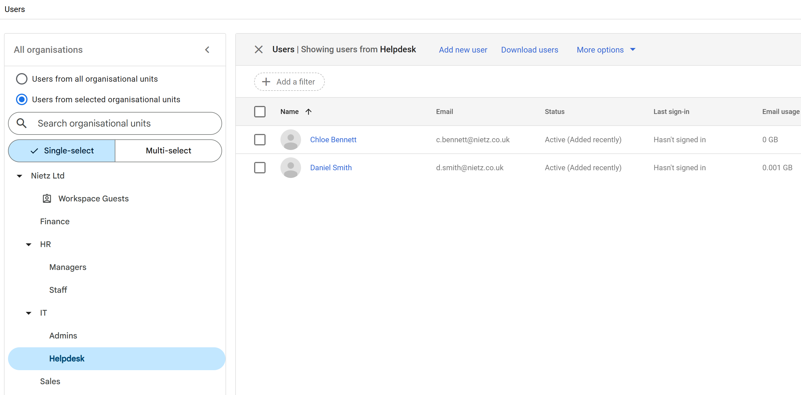

Overview
This section demonstrates the creation and organisation of user accounts within Google Workspace.
Users were assigned to organisational units (OUs) based on department and role, enabling structured access control and policy enforcement across the environment.
User Structure
Users were created to simulate a realistic business environment, covering multiple departments and access levels.
| Name | Organisational Unit | |
|---|---|---|
| Admin Account | admin@nietz.co.uk | IT/Admins |
| Kristian Nietzold | k.nietzold@nietz.co.uk | IT/Admins |
| Chloe Bennett | c.bennett@nietz.co.uk | IT/Helpdesk |
| Daniel Smith | d.smith@nietz.co.uk | IT/Helpdesk |
| Emma Wilson | e.wilson@nietz.co.uk | HR |
| Lee Johnson | l.johnson@nietz.co.uk | Finance |
| Kate Jones | k.jones@nietz.co.uk | Sales |
| Sarah Jackson | s.jackson@nietz.co.uk | Sales |
| James Brown | j.brown@nietz.co.uk | Management |
Structuring users correctly from the start allows policies, permissions, and security controls to be applied consistently across the organisation.
All Users Overview
The Admin console provides a centralised view of all users across the organisation, regardless of department or OU.

Full organisation user overview across all organisational units
This view is typically used for global administration tasks such as auditing, reporting, and bulk actions.
Administrative Users (Privileged Accounts)
Administrative users were placed in a dedicated OU to isolate privileged accounts from standard users.

Privileged admin accounts isolated within IT/Admins OU
Separating admin accounts allows stricter policies such as MFA enforcement, session control, and monitoring to be applied without affecting standard users.
Helpdesk Users (Delegated Administration)
Helpdesk users were grouped into a dedicated OU to support delegated administration without granting full administrative privileges.

Helpdesk users grouped for limited administrative roles
This allows specific admin roles (such as user management) to be assigned without exposing critical system-level permissions.
Business Users (Department Example)
Standard users were grouped into departmental OUs such as HR, Finance, Sales, and Management.

Sales department users as an example of standard user grouping
This structure allows department-specific policies to be applied while maintaining consistency across the organisation.
Design Approach
- Implemented role-based access control (RBAC)
- Separated privileged and standard users
- Enabled delegated administration via Helpdesk OU
- Applied consistent naming conventions
- Designed for scalability as the organisation grows
Summary
- Created users across multiple departments
- Assigned users to appropriate organisational units
- Separated administrative and standard accounts
- Implemented scalable and structured user management